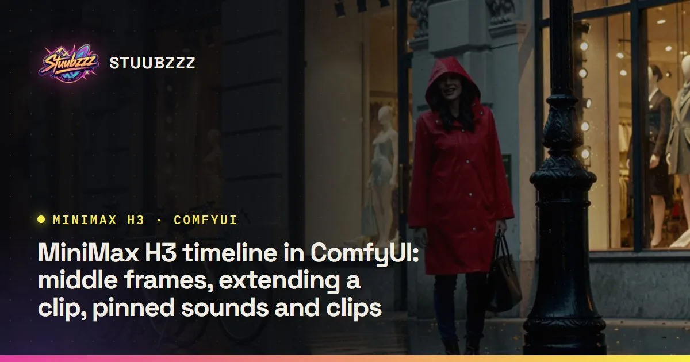
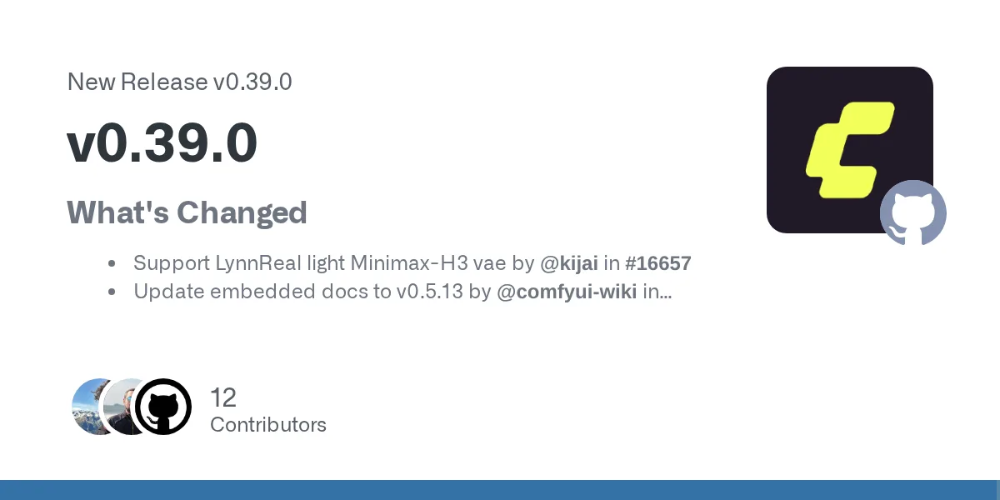

影片＋音訊生成2 則更新
MiniMax H3
ComfyUI 0.39 官方強化，社群工作流可逐秒控制
- 2026-10-08
Stubelius Ultimate H3 0.11：中間影格、接續影片、釘選音效

圖片來源：Stuubzzz 免費、MIT 授權的 ComfyUI 工作流包 Stubelius Ultimate H3 更新到 0.11，在 First/Last Frame 模式加入三種時間軸控制：最多兩張「中間影格」讓影片在指定秒數到達某個畫面；把一段影片丟進 First Frame 欄位就能接著續拍（搭配 ComfyUI-H3-Motion-Context-MultiRef，會帶入最後 1.6 秒的畫面和聲音）；最多 8 段音效或短片釘在指定秒數。作者實測對白能對到約 40 ms 內，但單靠音效無法讓角色動作對時，需搭配中間影格。片段會自動對齊 H3 的 17 影格網格（每 0.71 秒）以避免灰畫面。也修掉取消算圖後的記憶體洩漏。
- 2026-10-06
ComfyUI v0.39.0：H3 輕量 VAE、LoRA 相容與多項修正

圖片來源：GitHub · Comfy-Org ComfyUI 0.39.0 正式版（台灣時間 10/6 清晨發布）加入 LynnReal 輕量版 MiniMax H3 VAE 支援、修正 MiniMax VAE 卸載問題、在區塊執行前釋放 H3 嵌入暫存以降低記憶體。The Signal 整理指出，這版也支援用 DiffSynth-Studio／魔搭（ModelScope）訓練的 H3 與 HiDream O1 LoRA。同版還修正 Qwen Image 2.1 選 int8／int4 快取時的當機，並把 Save Video 預設編碼改成較高畫質。